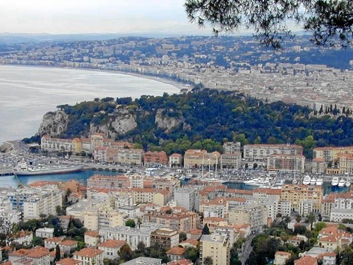
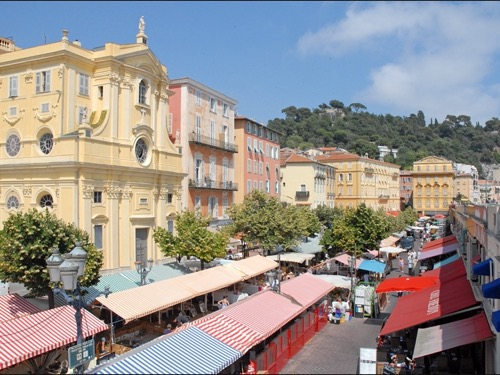

La capitale de la Côte d'Azur, entre le Vieux-Nice baroque, la Colline du Château et la baie des Anges.

Nice et ses environs immédiats
La capitale de la Côte d'Azur, entre le Vieux-Nice baroque, la Colline du Château et la baie des Anges.

